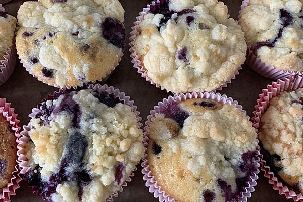

Blueberrymuffins Recipe

Blueberrymuffin Origins
A muffin is an individually portioned baked product.
Sources suggest that "muffin" may be related to the Greek bread "maphula".
Muffins may have solid items mixed into the batter.
Ingredients
- flour
- backing powder
- sugar
- vanilla sugar
- lemon zest
- butter
- eggs
- milk
- blueberries
Steps
- 200g flour 100g sugar 1 teaspoon lemon zest and backingpowder in bowl + mixing
- 100g butter melting
- mix melted butter with eggs and milk
- mix the buttermix with the ingredients in bowl
- mix washed blueberries into bowl
- mix rest of lemon zest with 50g sugar and vanilla sugar
- heat oven to 200 degrees
- mix everything into 12er muffinform
- bake muffins for 25 mins